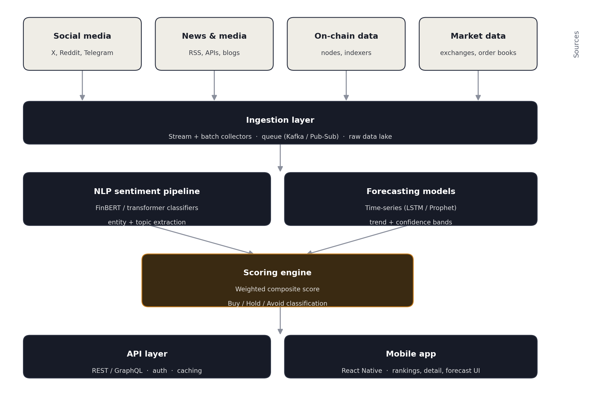

AI-powered crypto sentiment & investment-likelihood advisor - portfolio case study, mobile-first application.
Prepared as a design and engineering portfolio artifact. Contains prototype specifications, not a production system.
CryptoSense AI is a mobile application concept that aggregates social media chatter, news coverage, on-chain activity and market data for major cryptocurrencies, converts that raw signal into a composite sentiment score, and translates the score into a plain-language investment-likelihood indicator (Strong buy → Avoid). The app ranks all tracked currencies by that score, and for any single currency shows current price, 30-day history, a 7-day model-projected trend, and the underlying sentiment breakdown.
This document covers the product scope, the mobile UX, the end-to-end system architecture, the sentiment and forecasting methodology, data and API design, and the non-functional and compliance considerations a production build would need. A working front-end prototype (with simulated data) accompanies this document.
Retail crypto investors track many scattered signals - X/Reddit chatter, headlines, on-chain flows, price action - with no single place that turns them into a consistent, comparable score across assets.
Product goals:
Give a single, comparable investment-likelihood score (0–100%) per currency.
Make the reasoning behind the score visible (which sources drove it, and why).
Rank all tracked currencies so users can scan opportunities quickly.
Forecast a 7-day expected trend with a visible confidence band, not a false-precision single number.
Be mobile-first: fast to scan, thumb-friendly, legible in a single column.
Non-goals: this is not a trading or custody product, does not execute trades, and does not replace licensed financial advice.
| Persona | Need | Primary flow |
|---|---|---|
| Casual retail holder | Quick gut-check before buying/holding | Open app → scan ranked list → tap a coin |
| Active trader | Track sentiment shifts across many assets daily | Ranked list sorted by score, daily check-in |
| Researcher / analyst | Understand why sentiment moved | Detail view → source breakdown → headlines |
The prototype (see accompanying React file, CryptoSenseAI.jsx) implements two core screens in a single-column, thumb-first layout:
Search bar to filter by name or symbol.
A ranked, scrollable list: rank, symbol badge, name, live price, 24h change, and a likelihood % badge with a plain-language label (Strong buy, Buy, Hold, Caution, Avoid).
A persistent disclaimer that data is simulated in the prototype and that the app is not financial advice.
Current price and 24h change.
30-day historical price line chart.
A semicircular gauge showing the investment-likelihood percentage and label.
A sentiment-source breakdown: social media, news coverage, on-chain activity, each as a weighted bar.
A 7-day expected-trend chart, shown as a trend with a widening confidence band rather than a single line, plus the net expected percentage move.
Sample headlines that most influenced the score, with (fictional, sample) sources for demo purposes.
Visual system: dark surface (#10131C / #171B27 cards) so charts and colour-coded scores read clearly; Space Grotesk for headings, IBM Plex Sans for body copy, IBM Plex Mono for all numeric data (prices, percentages, scores) to make figures easy to scan; a single warm amber accent (#F5A623) reserved for score/brand emphasis, with green/amber/red used only for gain/neutral/loss semantics.
Each tracked currency receives three 0–100 sub-scores, refreshed continuously as new data arrives:
| Signal | Weight | What feeds it |
|---|---|---|
| Social sentiment | 40% | Volume-weighted NLP sentiment across X, Reddit, Telegram; spam/bot filtering applied first |
| News sentiment | 35% | NLP sentiment + relevance scoring over licensed news APIs and RSS feeds |
| On-chain / market signal | 25% | Wallet accumulation, exchange in/outflows, volatility, liquidity depth |
Composite score = 0.40 × social + 0.35 × news + 0.25 × on-chain. A hype-vs-substance penalty is subtracted when social sentiment sharply outpaces news and on-chain signal (a proxy for speculative pump activity with limited underlying support), before mapping to the final likelihood indicator:
| Score range | Label | Interpretation |
|---|---|---|
| 75–100 | Strong buy signal | Broad, consistent positive signal across all three sources |
| 60–74 | Buy signal | Net positive signal, some mixed inputs |
| 40–59 | Hold / neutral | Signals roughly balanced or conflicting |
| 25–39 | Caution advised | Net negative signal, elevated uncertainty |
| 0–24 | Avoid signal | Broadly negative signal across sources |
The 7-day forecast is produced by a separate time-series model seeded by the same composite trend direction, expressed as a projected price path with a widening confidence band - communicating uncertainty rather than a false-precision point estimate.
High-level data and processing flow, from raw source data to the mobile client:

Data sources: social platform APIs (X, Reddit, Telegram), licensed news APIs/RSS, blockchain nodes and indexers (e.g. block explorers, Glassnode-style analytics), and exchange market-data feeds.
Ingestion layer: stream collectors for high-frequency sources (social, market ticks) and scheduled batch collectors for news/on-chain snapshots, buffered through a message queue (Kafka/Pub-Sub) into a raw data lake for reproducibility and backfill.
NLP sentiment pipeline: transformer-based classifiers (e.g. a FinBERT-style financial sentiment model) with entity linking (which coin a post refers to), topic tagging, and bot/spam filtering.
Forecasting models: per-asset time-series models (e.g. Prophet or LSTM-based) trained on price and sentiment history, producing a 7-day expected path with confidence bands, retrained on a rolling schedule.
Scoring engine: applies the weighted composite formula, hype-penalty adjustment, and label mapping; writes versioned scores so historical scores remain auditable.
API layer: REST/GraphQL service exposing rankings, per-asset detail, and historical/forecast series, with auth, rate limiting and response caching.
Mobile app: React Native client consuming the API, rendering the rankings list and per-asset detail screens described above.
| Entity | Key fields |
|---|---|
| Asset | id, symbol, name, current_price, price_24h_change, updated_at |
| SentimentSnapshot | asset_id, ts, social_score, news_score, onchain_score, composite_score, label |
| PriceHistory | asset_id, ts, price, volume |
| Forecast | asset_id, generated_at, day_offset, projected_price, band_low, band_high |
| SourceItem | asset_id, source_type (social/news), source_name, text_summary, sentiment_polarity, ts, url |
| User (if accounts added) | id, watchlist[], alert_preferences, auth_provider |
| Endpoint | Purpose |
|---|---|
| GET /v1/rankings | Ranked list of all tracked assets with current score and price |
| GET /v1/assets/{id} | Current price, 24h change, composite score and label for one asset |
| GET /v1/assets/{id}/history?range=30d | Historical price series for charting |
| GET /v1/assets/{id}/forecast?days=7 | Projected price path with confidence band |
| GET /v1/assets/{id}/sentiment | Source breakdown (social/news/on-chain) and top driving headlines |
| GET /v1/assets/{id}/headlines | Recent, relevance-ranked headlines and posts feeding the score |
| Layer | Suggested technology |
|---|---|
| Mobile client | React Native (iOS/Android), Recharts/Victory for charts |
| API layer | Node.js or Python (FastAPI), REST/GraphQL, Redis cache |
| Streaming & queue | Apache Kafka or a managed Pub/Sub service |
| NLP / ML serving | Python, HuggingFace transformers (FinBERT-style), model server (TorchServe/BentoML) |
| Forecasting | Prophet, or an LSTM/temporal-transformer model per asset |
| Storage | PostgreSQL or TimescaleDB for time-series; S3-compatible object storage for the raw data lake |
| Infra | Containerised services (Docker/Kubernetes), managed cloud (AWS/GCP), CI/CD pipeline |
| Observability | Structured logging, metrics dashboards, model-drift monitoring on sentiment/forecast accuracy |
Latency: rankings list should refresh within a few seconds of new score computation; detail views cached and served in under 300ms.
Scalability: ingestion and NLP layers scale horizontally with source volume; scoring engine is stateless per asset per interval.
Reliability: score history is immutable/versioned so past recommendations can be audited.
Data quality: bot/spam filtering and source-credibility weighting before any post or article contributes to a score.
Security: API auth and rate limiting; no PII beyond optional account/watchlist data, encrypted at rest and in transit.
A tool like this sits close to financial advice, so a production build should treat the following as first-class requirements, not an afterthought:
Persistent, unavoidable disclaimer that the app provides informational sentiment analysis, not personalized financial advice, and that all investment decisions carry risk of loss.
No guarantee-language in copy or marketing (avoid words like "guaranteed returns" or "certain profit").
Clear labelling of the confidence/uncertainty in forecasts (bands, not single numbers).
Jurisdictional review: depending on target markets, presenting scored "buy/avoid" signals may trigger financial-advisory or investment-research regulatory obligations (e.g. registration requirements in the US, EU, or UK) - this should be reviewed with legal counsel before launch.
Transparent methodology page so users can see how a score is derived, and a changelog when scoring weights change.
| Phase | Scope |
|---|---|
| MVP | Top 10–20 assets, rankings + detail screens, daily-refresh sentiment, static 7-day forecast |
| V1 | Real-time sentiment refresh, push alerts on score changes, personal watchlists |
| V2 | Portfolio-aware scoring (correlate score with a user's actual holdings), backtesting dashboard showing historical score accuracy |
| V3 | Multi-language source coverage, community-verified source credibility ratings |
The accompanying front-end prototype (CryptoSenseAI.jsx) uses deterministic simulated data for 10 major currencies to demonstrate the rankings screen, detail screen, gauge indicator, source breakdown, and 7-day forecast chart end to end. It does not call live social, news or market APIs. Wiring it to production data means implementing sections 6–9 above (ingestion, NLP pipeline, forecasting model, and API layer) behind the same API contract the prototype's UI already expects.